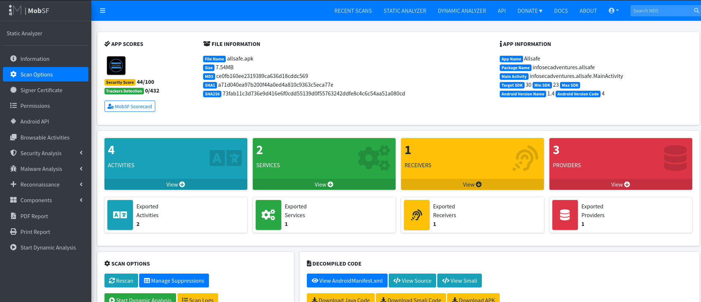

Firstly, analyze this app with MobSF to conduct an efficient static analysis and understand the application flow.
Developers often utilize logging to track their code execution and troubleshoot errors. However, there are instances when sensitive information, such as login credentials or authentication tokens, may inadvertently be recorded in the logs.
logcat command
to observe the device logs for any sensitive data being logged.
adb logcatLook for entries in the logs that may contain sensitive information, such as:
This is the command that can efficiently utilize
logcat and the process:
adb shell logcat --pid=$(adb shell pidof -s
infosecadventures.allsafe)
Output of the command for Allsafe challenge.
Visual representation of the Allsafe application.
Here’s another example from the Diva challenges:
adb logcat --pid=$(adb shell pidof -s jakhar.aseem.diva)
Output of the logcat command for Diva challenge.
Insecure logging can pose a significant security risk. Developers should be cautious about what data is logged and ensure that sensitive information is adequately protected or omitted from logs.
In this challenge, you will discover credentials located in different parts of the application.
The first credential can be found in the following location:
Location of the first hardcoded credential.
The second credential requires more in-depth tracing of the code.
Location of the second hardcoded credential.
dev_env String
To find the dev_env string, navigate to
/Resources/resources.arsc/res/values/strings.xml and
search for it.
Searching for the dev_env string in strings.xml.
Firebase is a cloud-based, real-time NoSQL database that can be integrated into both Android and iOS applications. To begin testing, the first step is to identify the Firebase URL. In Jadx, navigate to the path
/Resources/resources.arsc/res/values/strings.xml and search for the Firebase entry to locate the URL.
Overview of Firebase Database integration.
Next, open your browser and attempt to access the
/.json endpoint. If you receive a "Permission Denied" response, this indicates that the database is securely configured. Conversely, if you receive JSON data or a null response, it implies that you have at least read permissions.
Attempting to access the Firebase JSON endpoint.